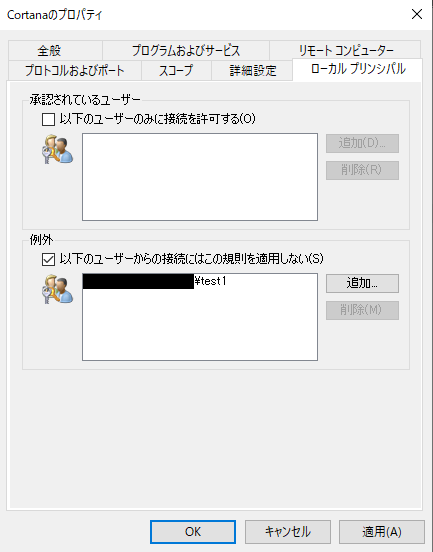
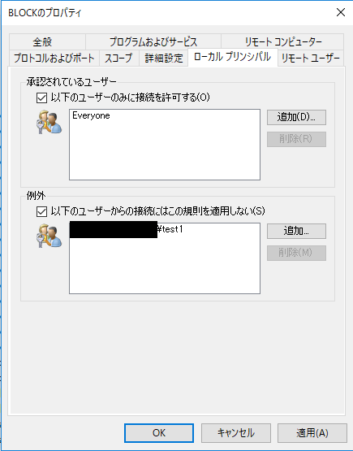

こんにちは、Windows Commercial Networking チームです。
本記事では、Windows Defender ファイアウォール （旧Windows ファイアウォール）の規則で、[ローカル プリンシパル] タブ配下の設定を行った場合にご注意いただきたい動作についてご紹介します。この動作は Windows 8 / Windows Server 2012 以降投稿時点でサポート中のすべてのバージョンに共通します。
動作の概要について
Windows Defender ファイアウォールの規則では、[ローカル プリンシパル] というプロパティ項目があり、こちらを設定することで、特定のアカウントで実行されるアプリケーションやサービスのみに規則を適用する、または、規則を適用しないとの制御を行うことができます。
具体的には、これらの項目を設定すると、設定タブ中の [承認されているユーザー] に追加したユーザーのアカウントで動作するアプリケーションやサービスには規則が適用され、[例外] に追加したユーザーに関しては規則が適用されない動作となります。
このとき以下のように、[承認されているユーザー] にチェックを入れず、[例外] の項目を単独でチェックし、ユーザーを追加した場合、追加したユーザーのみならず全ユーザーに規則が適用されない動作となります。

原因
規則の適用時に、[承認されているユーザー] と [例外] の両方の設定が参照され、 [承認されているユーザー] が存在しない場合は規則の適用対象ユーザーが存在しないとみなされます。
解決策
特定ユーザーのみに規則を適用する場合は、[ローカル プリンシパル] の [承認されているユーザー] にその特定ユーザーを指定します。
特定ユーザーを規則の対象外にする場合は、[ローカル プリンシパル] の [承認されているユーザー] に Everyone などのグループを指定した上で、[例外] に対象外とする特定ユーザーを指定します。
設定例
以下の設定の場合、”test1” ユーザーには規則は適用されず、それ以外の全ユーザーに規則が適用されます。

特記事項
本記事は 2019 年 7 月 11 日に公開された記事を本ブログに移行した記事になります。
また本情報の内容 (添付文書、リンク先などを含む) は、作成日時点でのものであり、予告なく変更される場合があります。